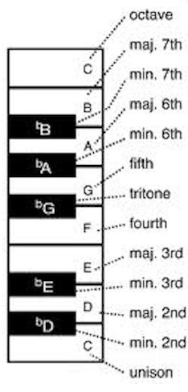
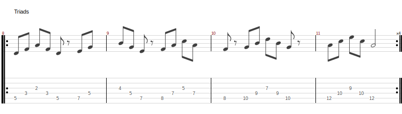

Music
Theory
Intervals
C-Major Scale:
C D E F G A B s1 s2 s3 s4 s5 s6 s7
Intervals:
| Semitones | Notation | Notes | Intervalnames |
|---|---|---|---|
| 0 | C | ||
| 1 | (b9) | Cis, C sharp | |
| 2 | (9) | D | s2 |
| 3 | b3 | Es, Dis, E flat, D sharp | |
| 4 | 3 | E | s3 major third |
| 5 | 4(11)(sus4) | F | s4 perfect 4th |
| 6 | b5 | ||
| 7 | 5 | G | s5 perfect 5th |
| 8 | |||
| 9 | 6(13) | A | s6 major sixth |
| 10 | 7 | Ais, A sharp | minor seventh |
| 11 | maj7 | B | s7 |
| 12 |

Major Scale
Structure
W W H W W W H


Patterns
Pattern 1

3-Finger-Scale (see F-Lydian)

Pattern 2

3-Finger-Scale (see G-Mixolydian)

Pattern 3

3-Finger-Scale (see A-Aeolian)

Pattern 4

3-Finger-Scale (see B-Locrian)

Pattern 5

3-Finger-Scale (see C-Ionian)

The 7 modes of the major scale (C-major)
If we take the notes of C-major and start from each note we get 7 new scales (modes).
F - Lydian
G - Mixolydian
A - Aeolian
B - Locrian
C - Ionian
D - Dorian

E - Phrygian

Minor Scale
Natural Minor
Structure
W H W W H W W


Harmonic Minor
Structure
W H W W H W+ H


Melodic Minor
Structure
W H W W W W H


Arpeggios
Major and Minor Shapes
Basic Shapes

Am Shape

G Shape

Triads

Diminished

Jahrhundertplatten
- Deep Purple - In Rock (1970)
- Uriah Heep - Salisbury (1971)
- Pink Floyd - Wish You Were Here (1975)
- Jethro Tull - Thick As A Brick (1972)
- SRV - Couldn't Stand The Weather (1984)
- Slayer - Reign In Blood (1986)
- Iron Maiden - Somewhere In Time (1986)
- Metallica - Master Of Puppets (1986)
- Halloween - Keeper Of The Seven Keys Part 2 (1988)
- Fates Warning - Perfect Symmetry (1989)
- Psychotic Waltz - A Social Grace (1989)
- Dream Theater - When Dream And Day Unite (1989)
- Death - Individual Thought Patterns (1993)